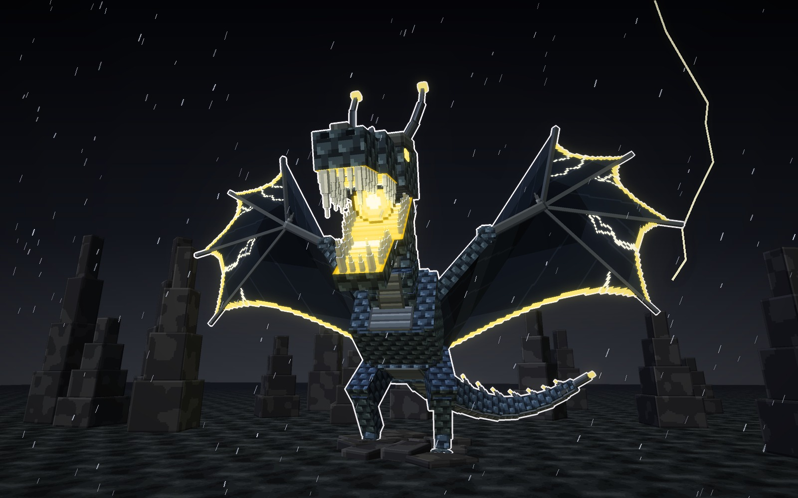
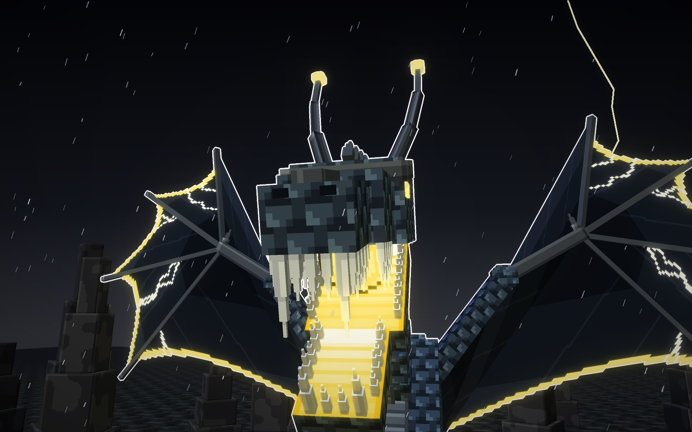
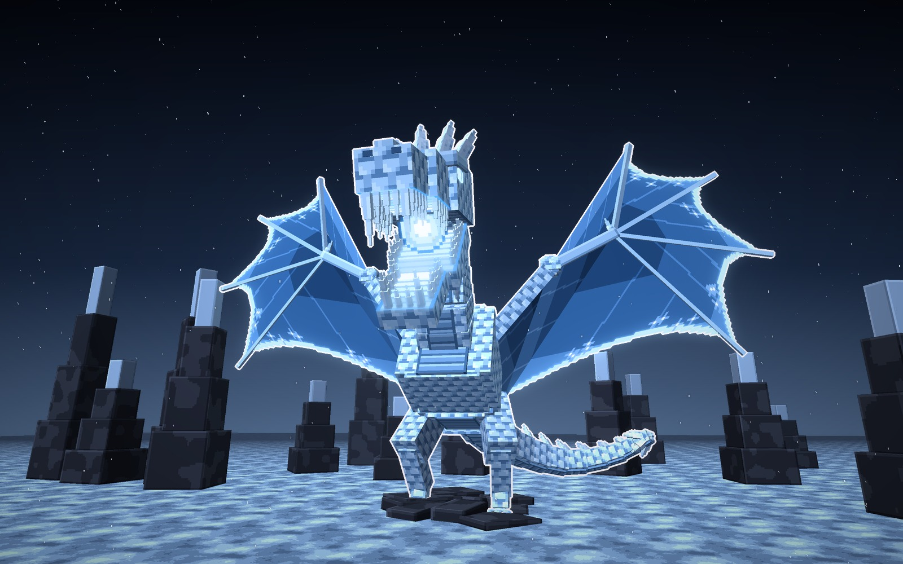
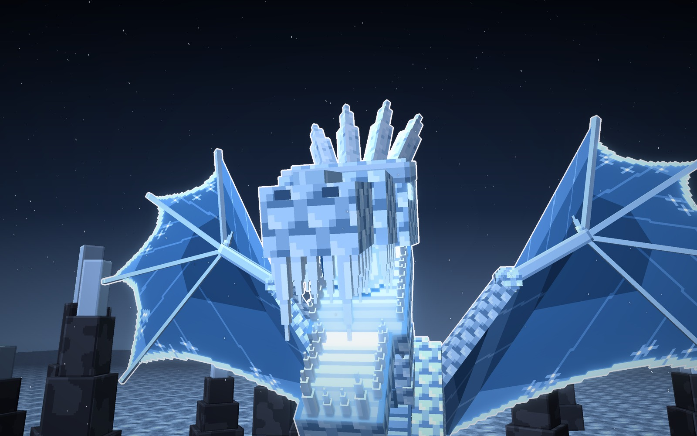
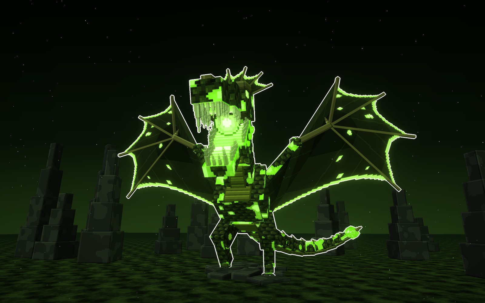
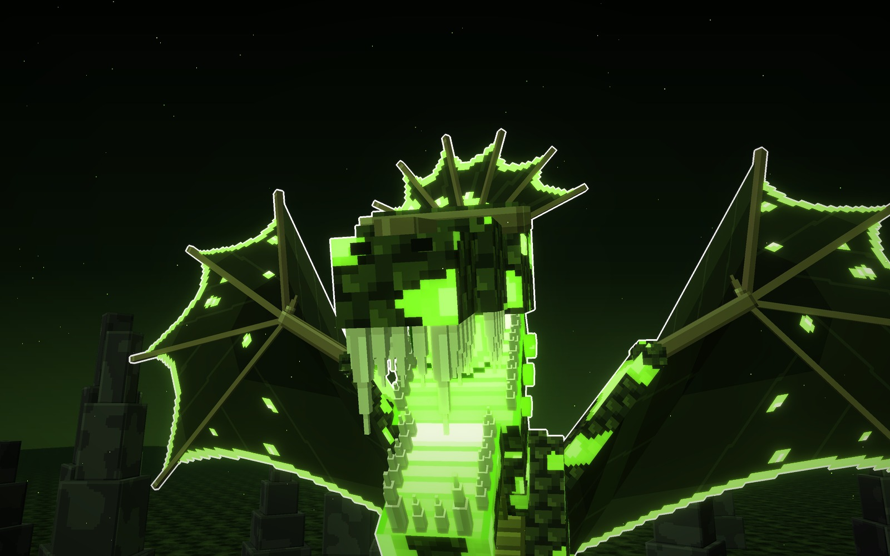
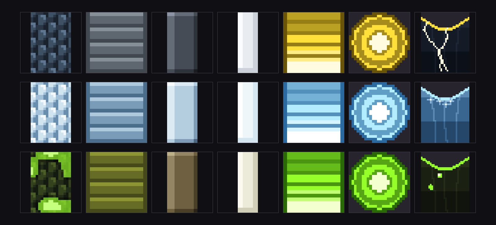

Cómo está hecha
Lo que comparten los tres tipos
- El mismo modelo: se planta sobre dos patas en un risco, con las alas abiertas y el cuello en ese.
- La cabeza manda: fauces abiertas con dientes en peine, colmillos y la garganta encendida con su núcleo.
- Lo nuevo: las alas tienen los nervios de una libélula y el borde encendido. Por ellas le corre su elemento.
Igual que en Simara
- Texturas limpias, a 8 píxeles por bloque: escamas, escudos, membrana en bandas. Sin ruido ni motas sueltas.
- Un neón por tipo, en la boca, en los ojos y en el borde de las alas.
- Cambian la piel, el neón y los adornos de la cabeza y de la cola.
A · tipo tormenta · neón amarillo
Riscara de Tormenta
La del risco bajo la tormenta. Escamas de pizarra, dos cuernos que acaban en una punta encendida, como
pararrayos, y las alas oscuras con rayos en zigzag que le cruzan la membrana. La cola acaba en un tridente de púas.


Su piel y sus adornos
- Piel
- escamas de pizarra azulada
- Vientre
- una franja de escudos grises
- Alas
- membrana oscura con el borde encendido y rayos en zigzag
- Cabeza
- dos cuernos como pararrayos, con la punta encendida, y púas por la frente
- Cola
- acaba en un tridente de púas con una chispa
Señas
- Su núcleo de la garganta es de rayo.
- La más oscura de las tres: se lee por el amarillo.
pizarra
vientre
ala
neón
En pelealos cuernos atraen los rayos: cuando se cargan, avisan del golpe que viene.
B · tipo escarcha · neón azul hielo
Riscara de Escarcha
La de la cumbre nevada. Escamas blancas de escarcha, una corona de carámbanos, cristales por el lomo y la
cola, y las alas azules con estrellas de escarcha junto al borde. Le cuelgan carámbanos de la quijada.


Su piel y sus adornos
- Piel
- escamas blancas de escarcha con sombra azul
- Vientre
- una franja de escudos azul pálido
- Alas
- membrana azul con el borde encendido y estrellas de escarcha
- Cabeza
- una corona de cuatro carámbanos y carámbanos colgando de la quijada
- Cola
- acaba en un ramo de cristales de hielo
Señas
- Su núcleo de la garganta es de hielo.
- La más clara de las tres: brilla contra la noche.
escarcha
vientre
ala
neón
En peleasu aliento congela el suelo; los cristales de la cola se rompen y caen como carámbanos.
C · tipo ponzoña · neón verde
Riscara de Ponzoña
La del risco del pantano. Escamas oscuras con manchas de veneno que brillan, una gorguera de membrana
abierta detrás de la cabeza, bulbos de esporas por la quijada y el lomo, y las alas con pústulas encendidas.


Su piel y sus adornos
- Piel
- escamas oscuras con manchas de veneno de borde limpio
- Vientre
- una franja de escudos verde oliva
- Alas
- membrana oscura con el borde encendido y pústulas que brillan
- Cabeza
- una gorguera de membrana abierta en abanico y bulbos de esporas por la quijada
- Cola
- acaba en un bulbo de esporas con un aguijón
Señas
- Su núcleo de la garganta es de ponzoña.
- La más inquietante: brilla por manchas.
escamas
veneno
vientre
ala
En peleadeja nubes de esporas al batir las alas; los bulbos revientan y envenenan alrededor.
Los tres tipos, a escala
La misma dragona en los tres tipos, con la misma luz y un jugador delante (1,8 bloques). Mide unos 22 bloques
de alto con las alas abiertas y 35 de envergadura.
Los materiales
Las texturas de cada tipo a píxel grande: la piel, el vientre, el hueso de los dedos, los dientes, el interior de
las fauces, el núcleo de la garganta y la membrana del ala con su borde encendido.

Veredicto de Juan
Le gustaron el monstruo y sus tres tipos (12-10-2026): «me gustó también ese monstruo y sus variables».
Bocetos: materiales/generadores/riscara_modelo.py y riscara_escenas.py.